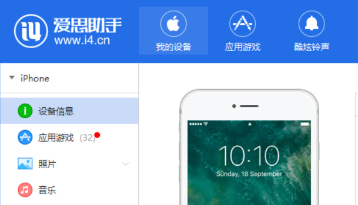
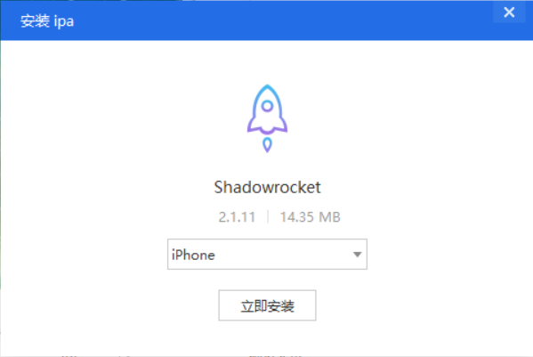
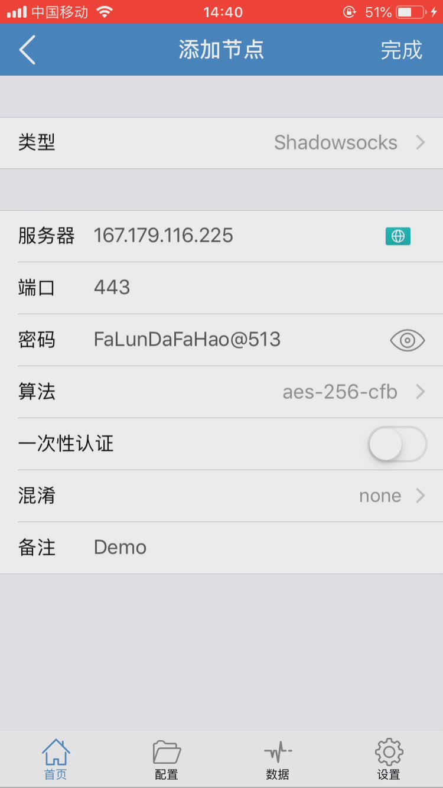
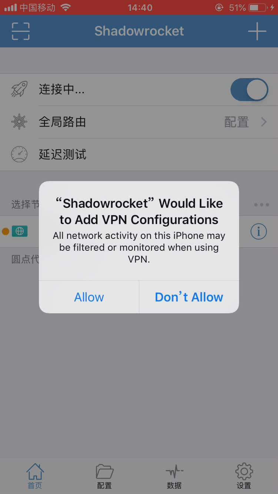
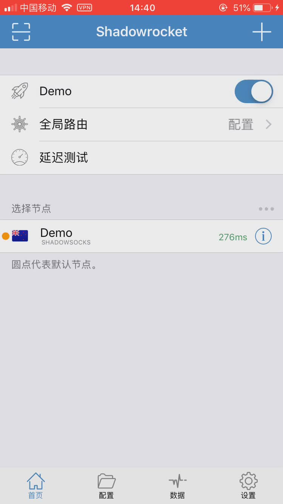

iPhone使用Shadowsocks翻墙
此教程适用于没有美区AppleID的网友；如果有的话，可以直接上AppStore下载Potatso Lite
步骤如下：
1. 下载Shadowrocket IPA文件
点击下载 Shadowrocket。
2. 使用爱思助手给手机安装Shadowrocket
- 在电脑上安装爱思助手 https://www.i4.cn/；
- 将iPhone通过USB连接到电脑；
- 在电脑上双击下载好的ipa文件，将shadowrocket安装到手机上。


3. 添加Shadowsocks账号
-
直接点击左上角扫描主页上的二维码，或者点击添加节点，填写IP地址、端口、密码及加密协议，点击完成回到首页；
- 选中刚添加的节点，点击右上角开关，连接，点击Allow允许添加VPN配置；
- 成功连接后，屏幕上方会有vpn字样图标 。
